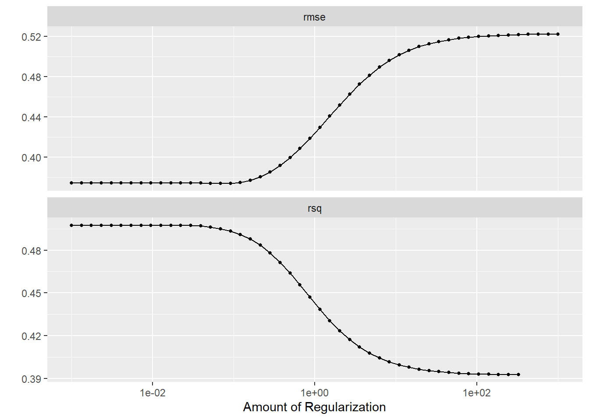
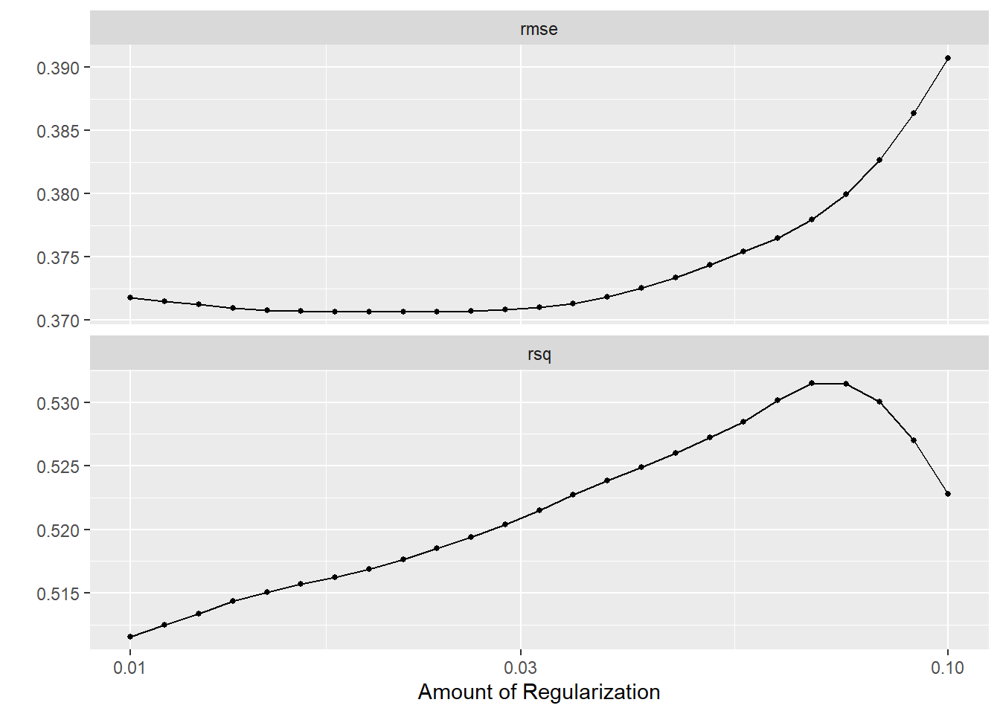
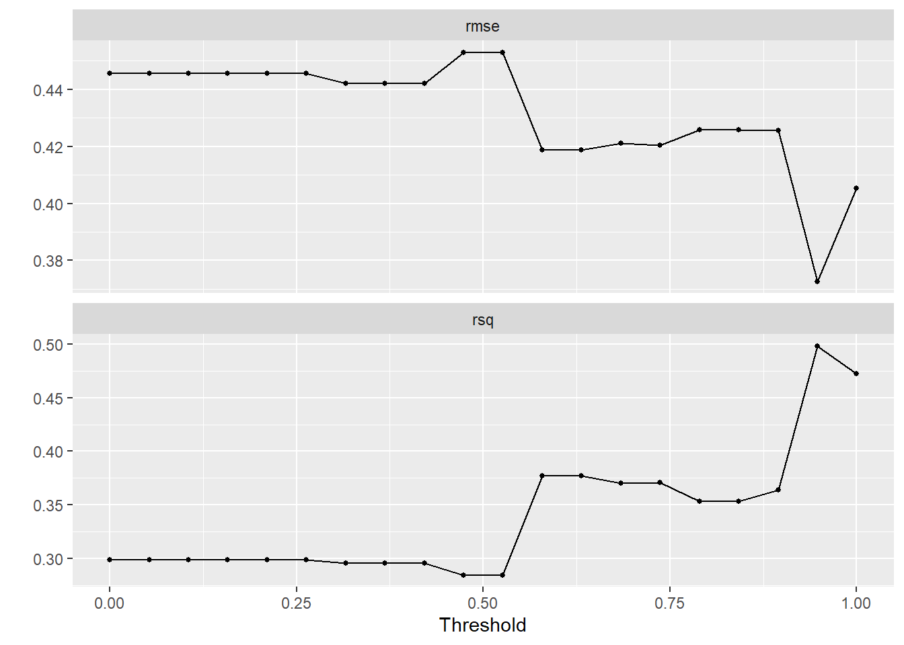
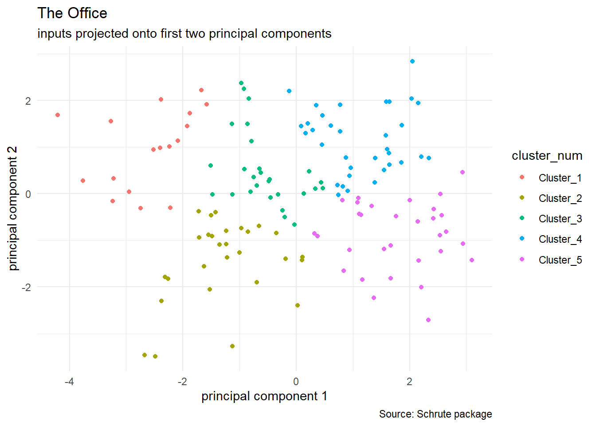

library("corrplot")
library("tidyclust")
library("tidymodels")
library("tidyverse")
# school colors
princeton_orange <- "#E77500"
princeton_black <- "#121212"
# data set: GPT detectors
office_raw <- readr::read_csv('office_sentiment.csv')
# office_raw <- readr::read_csv("https://raw.githubusercontent.com/dsollberger/sml201slides/main/data/office_sentiment.csv")SML 201
Start
Libraries and Loading the Data
- Goal: Explore topics in supervised learning
Objectives:
tidymodelsridge regression
LASSO regression
Case Study: Sentiment in The Office
The data set this week come from the schrute package, and it features the scripts from the popular TV show The Office. I have augmented the data with sentiment analyses scores from three algorithms
syuzhetsentimentrsentimentAnalysis
Each row of the data frame is a spoken line of dialogue. From there, the data has the following variables:
index: to easily refer to a particular row in the dataseason: The Office ran for 9 seasonsepisode: the episode number within a seasonepisode_namedirectorwritercharacter: the fictional character of the TV showtext: the spoken text in the line of dialoguetext_w_direction: … includes stage directionimdb_rating: Internet Movie Database rating for the episode (from 0 to 10, which 10 being the highest)total_votes: number of IMdB users that voted on that episodeair_datesentimentAnalysis_scoresentimentr_scoresyuzhet_score
Research Question
In this session, we will define cringe as the standard deviation of a sentiment analysis score. Are the imdb_rating values explained by the cringe of the episodes?
Filtering
office_df <- office_raw |>
select(imdb_rating,
season, episode, total_votes,
sentimentAnalysis_score, sentimentr_score, syuzhet_score) |>
rename(ep_in_season = episode,
sent1 = syuzhet_score,
sent2 = sentimentr_score,
sent3 = sentimentAnalysis_score)Derived Variables
office_df <- office_df |>
group_by(season, ep_in_season) |>
mutate(sent1_mean = mean(sent1, na.rm = TRUE),
sent2_mean = mean(sent2, na.rm = TRUE),
sent3_mean = mean(sent3, na.rm = TRUE),
sent1_dev = sd(sent1, na.rm = TRUE),
sent2_dev = sd(sent2, na.rm = TRUE),
sent3_dev = sd(sent3, na.rm = TRUE)) |>
ungroup() |>
select(imdb_rating,
sent1_mean, sent2_mean, sent3_mean,
sent1_dev, sent2_dev, sent3_dev,
season, ep_in_season, total_votes) |>
distinct() |>
mutate(episode_num = 1:n())Correlation Plot
office_df |>
cor(use = "pairwise.complete.obs") |>
corrplot(method = "number",
order = "FPC",
type = "upper")Linear Regression
- model equation:
\[\hat{y} = \beta_{0} + \sum_{j=1}^{k} \beta_{j}X_{j}\] * loss function:
\[L(\vec{\beta}) = \text{argmin}_{\vec{\beta}} \sum_{i=1}^{N} \left(y_{i} - \beta_{0} - \sum_{j=1}^{k} \beta_{j}x_{ij}\right)\]
lin_fit <- linear_reg() |>
set_engine("lm") |>
fit(imdb_rating ~ ., data = office_df)tidy(lin_fit)# A tibble: 11 × 5
term estimate std.error statistic p.value
<chr> <dbl> <dbl> <dbl> <dbl>
1 (Intercept) 5.92 0.619 9.55 1.14e-17
2 sent1_mean -0.311 0.520 -0.598 5.50e- 1
3 sent2_mean -0.857 1.18 -0.726 4.69e- 1
4 sent3_mean 0.167 1.31 0.127 8.99e- 1
5 sent1_dev -0.236 0.401 -0.589 5.57e- 1
6 sent2_dev 0.975 1.20 0.814 4.16e- 1
7 sent3_dev 0.685 1.06 0.645 5.20e- 1
8 season 0.713 0.143 4.97 1.58e- 6
9 ep_in_season 0.0400 0.00630 6.35 1.82e- 9
10 total_votes 0.000428 0.0000388 11.0 8.24e-22
11 episode_num -0.0338 0.00644 -5.25 4.34e- 7\[\text{RSME} = \sqrt{\frac{\sum_{i=1}^{n}(y_{i} - \hat{y})^{2}}{n-k-1}}\]
predictions <- predict(lin_fit,
new_data = office_df |>
select(-imdb_rating))
true_values <- office_df |> select(imdb_rating)
n <- office_df |> drop_na(imdb_rating) |> nrow()
k <- ncol(office_df) - 1
RMSE <- sqrt((1/(n-k-1))*sum((true_values - predictions)^2))
print(RMSE)[1] 0.3604571
Size of regression coefficients?
Do the size of the regression coefficients (\(\beta_{i}\)) matter? Are the sizes of the regression coefficients related to the units of the measurements?
Ridge Regression
- loss function:
\[L(\vec{\beta}, \lambda) = \text{argmin}_{\vec{\beta}} \left[\sum_{i=1}^{N} \left(y_{i} - \beta_{0} - \sum_{j=1}^{k} \beta_{j}x_{ij}\right) + \lambda\sum_{j=i}^{k}\beta_{j}^{2}\right]\]
ridge_fit <- linear_reg(mixture = 0, penalty = 0) |>
set_engine("glmnet") |>
fit(imdb_rating ~ ., data = office_df)Penalties
tidy(ridge_fit, penalty = 0)
Attaching package: 'Matrix'The following objects are masked from 'package:tidyr':
expand, pack, unpackLoaded glmnet 4.1-8# A tibble: 11 × 3
term estimate penalty
<chr> <dbl> <dbl>
1 (Intercept) 7.48 0
2 sent1_mean -0.336 0
3 sent2_mean -0.911 0
4 sent3_mean -0.247 0
5 sent1_dev -0.684 0
6 sent2_dev 1.32 0
7 sent3_dev 0.846 0
8 season 0.00749 0
9 ep_in_season 0.0144 0
10 total_votes 0.000371 0
11 episode_num -0.00222 0tidy(ridge_fit, penalty = 201)# A tibble: 11 × 3
term estimate penalty
<chr> <dbl> <dbl>
1 (Intercept) 8.25 201
2 sent1_mean 0.0000141 201
3 sent2_mean 0.00537 201
4 sent3_mean -0.000168 201
5 sent1_dev -0.000994 201
6 sent2_dev 0.0118 201
7 sent3_dev 0.00446 201
8 season -0.000234 201
9 ep_in_season 0.0000353 201
10 total_votes 0.00000117 201
11 episode_num -0.0000102 201ridge_fit |> autoplot()Predictions
predict(ridge_fit,
new_data = office_df |> select(-imdb_rating),
penalty = 0) |>
head()# A tibble: 6 × 1
.pred
<dbl>
1 8.75
2 8.68
3 8.50
4 8.36
5 8.67
6 8.65predict(ridge_fit,
new_data = office_df |> select(-imdb_rating),
penalty = 201) |>
head()# A tibble: 6 × 1
.pred
<dbl>
1 8.25
2 8.25
3 8.25
4 8.25
5 8.25
6 8.25Lambda Grid
lambda_vals <- 10^seq(-3,3, length.out = 10)
format(lambda_vals, scientific=FALSE) [1] " 0.001000000" " 0.004641589" " 0.021544347" " 0.100000000"
[5] " 0.464158883" " 2.154434690" " 10.000000000" " 46.415888336"
[9] " 215.443469003" "1000.000000000"lambda_grid <- grid_regular(penalty(range = c(-3, 3)),
levels = 50)Data Split
office_split <- initial_split(office_df, strata = "imdb_rating")
office_train <- training(office_split)
office_test <- testing(office_split)
office_fold <- vfold_cv(office_train, v = 10)Preprocessing
ridge_recipe <- recipe(formula = imdb_rating ~ .,
data = office_train) |>
step_novel(all_nominal_predictors()) |>
step_dummy(all_nominal_predictors()) |>
step_zv(all_predictors())Specification
ridge_spec <- linear_reg(mixture = 0, penalty = tune()) |>
set_engine("glmnet")Workflow
ridge_workflow <- workflow() |>
add_recipe(ridge_recipe) |>
add_model(ridge_spec)Tuning
tune_results <- tune_grid(
ridge_workflow,
resamples = office_fold,
grid = lambda_grid
)tune_results |> autoplot()
tune_results |> collect_metrics() |> head()# A tibble: 6 × 7
penalty .metric .estimator mean n std_err .config
<dbl> <chr> <chr> <dbl> <int> <dbl> <chr>
1 0.001 rmse standard 0.375 10 0.0358 Preprocessor1_Model01
2 0.001 rsq standard 0.498 10 0.0956 Preprocessor1_Model01
3 0.00133 rmse standard 0.375 10 0.0358 Preprocessor1_Model02
4 0.00133 rsq standard 0.498 10 0.0956 Preprocessor1_Model02
5 0.00176 rmse standard 0.375 10 0.0358 Preprocessor1_Model03
6 0.00176 rsq standard 0.498 10 0.0956 Preprocessor1_Model03# tune_results |>
# collect_metrics() |>
# filter(.metric == "rmse") |>
# filter(mean == min(mean))Predictions Refined
# best_lambda <- tune_results |>
# collect_metrics() |>
# filter(.metric == "rmse") |>
# filter(mean == min(mean)) |>
# distinct() |>
# pull(penalty)
best_lambda <- select_best(tune_results, metric = "rmse") |>
pull(penalty)
predict(ridge_fit,
new_data = office_df |> select(-imdb_rating),
penalty = best_lambda) |>
head()# A tibble: 6 × 1
.pred
<dbl>
1 8.74
2 8.67
3 8.52
4 8.37
5 8.66
6 8.65LASSO Regression
- Least Absolute Shrinkage and Selection Operator regression
- loss function:
\[L(\vec{\beta}, \lambda) = \text{argmin}_{\vec{\beta}} \left[\sum_{i=1}^{N} \left(y_{i} - \beta_{0} - \sum_{j=1}^{k} \beta_{j}x_{ij}\right) + \lambda\sum_{j=i}^{k}|\beta_{j}|\right]\]
lasso_fit <- linear_reg(mixture = 1, penalty = 0) |>
set_engine("glmnet") |>
fit(imdb_rating ~ ., data = office_df)lasso_fit |> autoplot()Coefficients
tidy(lasso_fit, penalty = 1e-2)# A tibble: 11 × 3
term estimate penalty
<chr> <dbl> <dbl>
1 (Intercept) 7.62 0.01
2 sent1_mean -0.308 0.01
3 sent2_mean -0.453 0.01
4 sent3_mean 0 0.01
5 sent1_dev -0.650 0.01
6 sent2_dev 0.852 0.01
7 sent3_dev 0.449 0.01
8 season 0 0.01
9 ep_in_season 0.0135 0.01
10 total_votes 0.000387 0.01
11 episode_num -0.00172 0.01tidy(lasso_fit, penalty = 1e-1)# A tibble: 11 × 3
term estimate penalty
<chr> <dbl> <dbl>
1 (Intercept) 7.59 0.1
2 sent1_mean 0 0.1
3 sent2_mean 0 0.1
4 sent3_mean 0 0.1
5 sent1_dev 0 0.1
6 sent2_dev 0 0.1
7 sent3_dev 0 0.1
8 season 0 0.1
9 ep_in_season 0 0.1
10 total_votes 0.000314 0.1
11 episode_num -0.0000509 0.1Lambda Grid
Preprocessing
lasso_recipe <- recipe(formula = imdb_rating ~ .,
data = office_train) |>
step_novel(all_nominal_predictors()) |>
step_dummy(all_nominal_predictors()) |>
step_zv(all_predictors()) |>
step_normalize()Specification
lasso_spec <- linear_reg(mixture = 1, penalty = tune()) |>
set_engine("glmnet")Workflow
lasso_workflow <- workflow() |>
add_recipe(lasso_recipe) |>
add_model(lasso_spec)Tuning
lambda_grid <- grid_regular(penalty(range = c(-2, -1)),
levels = 25)
tune_results <- tune_grid(
lasso_workflow,
resamples = office_fold,
grid = lambda_grid
)tune_results |> autoplot()
Explanatory Variables
tune_results |>
collect_metrics() |>
filter(.metric == "rmse") |>
filter(mean == min(mean))# A tibble: 1 × 7
penalty .metric .estimator mean n std_err .config
<dbl> <chr> <chr> <dbl> <int> <dbl> <chr>
1 0.0215 rmse standard 0.371 10 0.0392 Preprocessor1_Model09best_lambda <- select_best(tune_results, metric = "rmse") |>
pull(penalty)
tidy(lasso_fit, penalty = best_lambda)# A tibble: 11 × 3
term estimate penalty
<chr> <dbl> <dbl>
1 (Intercept) 7.74 0.0215
2 sent1_mean -0.162 0.0215
3 sent2_mean 0 0.0215
4 sent3_mean 0 0.0215
5 sent1_dev -0.547 0.0215
6 sent2_dev 0.444 0.0215
7 sent3_dev 0.0297 0.0215
8 season 0 0.0215
9 ep_in_season 0.0117 0.0215
10 total_votes 0.000376 0.0215
11 episode_num -0.00149 0.0215Principal Components Regression
PCA
Principal Component Analysis (PCA) is a popular algorithm for dimensionality reduction.
Preprocessing
pca_recipe <-
recipe(formula = imdb_rating ~ ., data = office_train) |>
step_normalize(all_predictors()) |>
step_pca(all_predictors(), threshold = tune())Specification
lm_spec <-
linear_reg() |>
set_engine("lm")Workflow
pca_workflow <-
workflow() |>
add_recipe(pca_recipe) |>
add_model(lm_spec)Tuning
lambda_grid <- grid_regular(threshold(),
levels = 20)
tune_results <- tune_grid(
pca_workflow,
resamples = office_fold,
grid = lambda_grid
)tune_results |> autoplot()
best_threshold <- select_best(tune_results, metric = "rmse")
pca_refined <- finalize_workflow(pca_workflow, best_threshold)
pca_fit <- fit(pca_refined, data = office_train)Visualization
flat_data <- pca_recipe <-
recipe(formula = imdb_rating ~ ., data = office_train) |>
step_normalize(all_predictors()) |>
step_pca(all_predictors()) |>
prep() |>
juice() |>
select(imdb_rating, PC1, PC2)kmeans_fit <- k_means(num_clusters = 5) |>
set_engine("stats") |>
fit(imdb_rating ~ PC1 + PC2, data = flat_data)flat_data |>
mutate(cluster_num = extract_cluster_assignment(kmeans_fit) |>
pull()) |>
ggplot(aes(x = PC1, y = PC2, color = cluster_num)) +
geom_point() +
labs(title = "The Office",
subtitle = "inputs projected onto first two principal components",
caption = "Source: Schrute package",
x = "principal component 1", y = "principal component 2") +
theme_minimal()
Precept 10
- MLB players from 1986
- explanatory variables: offense stats for hitters
- predict 1987 salaries

Quo Vadimus?
- Precept 10
- Project 3 (Due Nov 20)
- CLO Assessment
- Exam 2 (December 5)
- TODO: watch Ted Lasso to generate nerdy jokes
Footnotes
(optional) Additional Resources
- ISLR tidymodels labs by Emil Hvitfeldt
Session Info
sessionInfo()R version 4.4.1 (2024-06-14 ucrt)
Platform: x86_64-w64-mingw32/x64
Running under: Windows 10 x64 (build 19045)
Matrix products: default
locale:
[1] LC_COLLATE=English_United States.utf8
[2] LC_CTYPE=English_United States.utf8
[3] LC_MONETARY=English_United States.utf8
[4] LC_NUMERIC=C
[5] LC_TIME=English_United States.utf8
time zone: America/New_York
tzcode source: internal
attached base packages:
[1] stats graphics grDevices utils datasets methods base
other attached packages:
[1] glmnet_4.1-8 Matrix_1.7-0 lubridate_1.9.3 forcats_1.0.0
[5] stringr_1.5.1 readr_2.1.5 tidyverse_2.0.0 yardstick_1.3.1
[9] workflowsets_1.1.0 workflows_1.1.4 tune_1.2.1 tidyr_1.3.1
[13] tibble_3.2.1 rsample_1.2.1 recipes_1.0.10 purrr_1.0.2
[17] parsnip_1.2.1 modeldata_1.4.0 infer_1.0.7 ggplot2_3.5.1
[21] dplyr_1.1.4 dials_1.3.0 scales_1.3.0 broom_1.0.7
[25] tidymodels_1.2.0 tidyclust_0.2.3 corrplot_0.94
loaded via a namespace (and not attached):
[1] rlang_1.1.4 magrittr_2.0.3 furrr_0.3.1
[4] compiler_4.4.1 vctrs_0.6.5 lhs_1.2.0
[7] pkgconfig_2.0.3 shape_1.4.6.1 crayon_1.5.3
[10] fastmap_1.2.0 ellipsis_0.3.2 backports_1.5.0
[13] labeling_0.4.3 utf8_1.2.4 rmarkdown_2.28
[16] prodlim_2024.06.25 tzdb_0.4.0 bit_4.5.0
[19] xfun_0.48 jsonlite_1.8.8 parallel_4.4.1
[22] R6_2.5.1 stringi_1.8.4 parallelly_1.37.1
[25] rpart_4.1.23 Rcpp_1.0.12 iterators_1.0.14
[28] knitr_1.48 future.apply_1.11.2 splines_4.4.1
[31] nnet_7.3-19 timechange_0.3.0 tidyselect_1.2.1
[34] rstudioapi_0.17.0 yaml_2.3.8 timeDate_4032.109
[37] codetools_0.2-20 listenv_0.9.1 lattice_0.22-6
[40] withr_3.0.2 evaluate_1.0.1 archive_1.1.8
[43] future_1.33.2 survival_3.6-4 pillar_1.9.0
[46] foreach_1.5.2 generics_0.1.3 vroom_1.6.5
[49] hms_1.1.3 munsell_0.5.1 globals_0.16.3
[52] class_7.3-22 glue_1.8.0 tools_4.4.1
[55] data.table_1.16.2 modelenv_0.2.0 gower_1.0.1
[58] grid_4.4.1 ipred_0.9-14 colorspace_2.1-1
[61] cli_3.6.3 DiceDesign_1.10 fansi_1.0.6
[64] lava_1.8.0 gtable_0.3.5 GPfit_1.0-8
[67] digest_0.6.35 ggrepel_0.9.6 htmlwidgets_1.6.4
[70] farver_2.1.2 htmltools_0.5.8.1 lifecycle_1.0.4
[73] hardhat_1.4.0 bit64_4.5.2 MASS_7.3-60.2
Example Callout Block
note, tip, warning, caution, or important